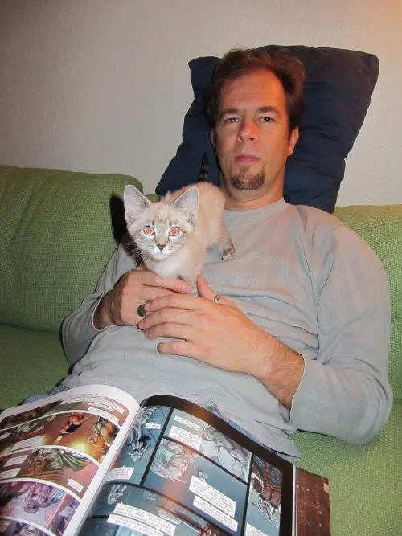
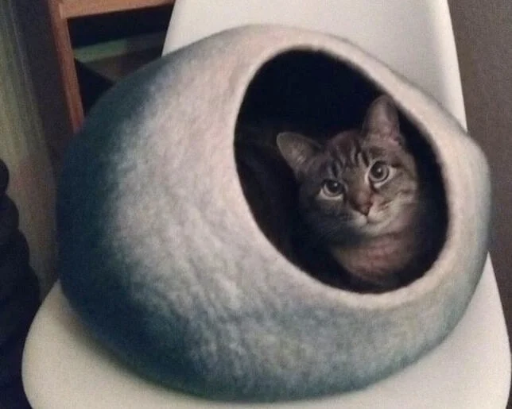
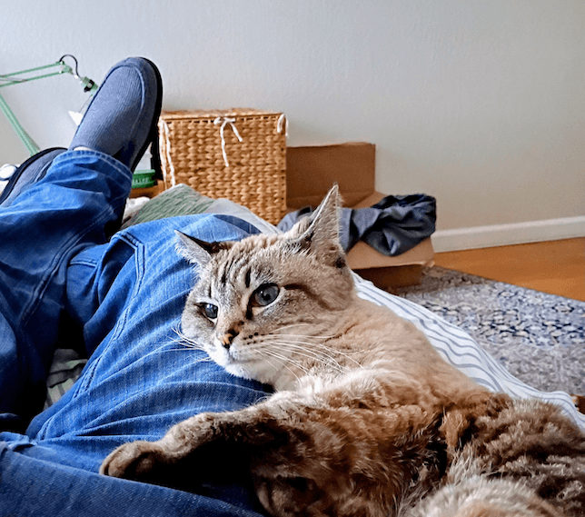
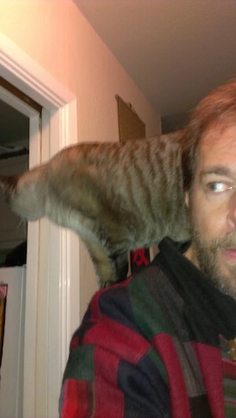
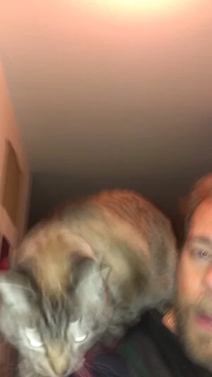
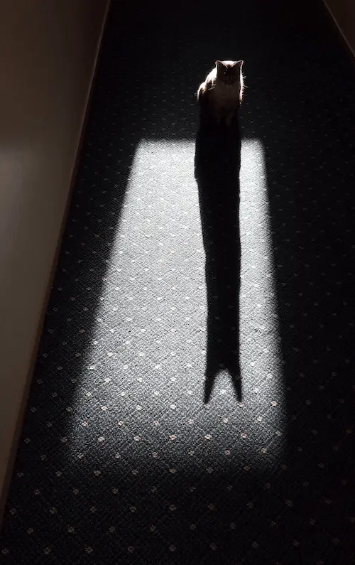
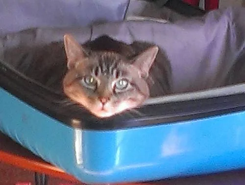
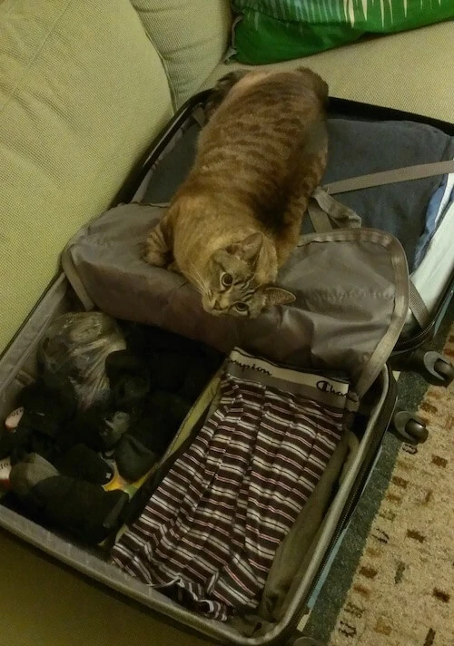

I'm the human of a wonderful cat called Neige ("snow" in French).
We met in 2011 at the Peninsula Humane Society & SPCA. She was a tiny, snow-white kitten with super-soft fur. It was love at first sight, and she moved in right after our first date. Her fur got darker as she grew up, but the name stuck. Fifteen years later, she's still the boss of the house.

Neige is my first cat ever (I grew up with dogs). A friend with kids once told me, "I didn't know how to be a parent. My kid taught me." It's the same with cats: Neige taught me how to be a good cat dad. She may have trained me a little too well… and she's a bit spoiled.
In winter, she spends most of her time in her cat cave, peeking out to supervise.

A few times a day, she comes to get me for a cuddle. It's not a request.

I tried to take a selfie with my beautiful cat… but she wouldn't stay still.


She's happy to hold the pose when playing Batman, though.

She really doesn't like it when I leave. Every time I pack for a trip, she moves into my suitcase and refuses to leave.

